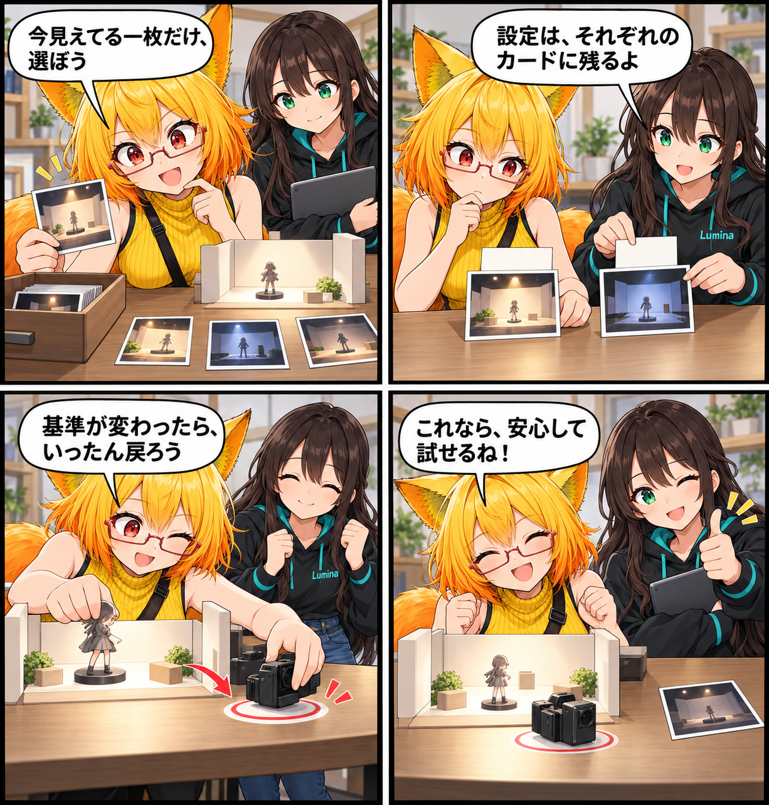

2026.11.02 / Development Log
プレビューを止める前に、ちゃんと戻す
カメラモーションのカード選択とプレビューを、状況が変わっても落ち着いて試せる操作へ整えました。
今回は development（開発進捗） です。集計期間は2026-11-01 03:00:00 JSTから2026-11-02 02:59:59 JSTまで、対象はViewerの
main です。集計終了時点のHEADは cb2052a40b4fd17de53c74da9880748a1b0c2f0e、期間内コミットは1件でした。未コミット差分は期間内に実装された事実を確定できないため、実績には含めていません。
いま見えている一枚だけを動かす
モーションを探すとき、検索やカテゴリで絞り込んだカードだけが、ホバーやキーボード操作に正しく反応するようにしました。前に表示していたカードの領域が残って、いま見えていないカードが反応を奪うことはありません。どのカードを動かすかも、表示中の候補から一つだけ先に決めます。
カードごとの設定を取り違えない
カードを切り替えた直後は、新しく選んだモーションの設定を使って右側の調整欄を描くように修正しました。これで、前のカードの項目で新しい設定を上書きしてしまう可能性を避け、各プリセットが持つ構図や時間の設定をそれぞれ保てます。
変わったら、いったん戻ってから始める
プレビュー中に注視対象、自動構図合わせ、アバター相対の基準を変えた場合は、いったん開始時のカメラ位置・向き・FOVへ戻してから、新しい基準でプレビューを再開します。追従先のアバターや撮影カメラがなくなったときも、安全に停止して理由を知らせます。
停止すればカメラの位置・向き・FOVは元に戻るため、何もしない重複した「位置を戻す」ボタンもなくしました。今回の変更は、新しいカメラモーションを増やすものではなく、試す途中の状態を迷子にしないための修正です。
4コマの話
今回は、カメラの試写を始める前に「持ち場」を確認する小さな舞台裏の話にしました。カードは目の前の一枚だけ、基準が変わったら最初の立ち位置へ。派手な成功ではなく、安心してもう一度試せるところを締めにしています。
まとめ
表示中のカードだけを反応させ、カードごとの設定を守り、状況が変われば安全に戻して再開する。カメラモーションのプレビューを、試行錯誤を続けやすい操作に整えました。